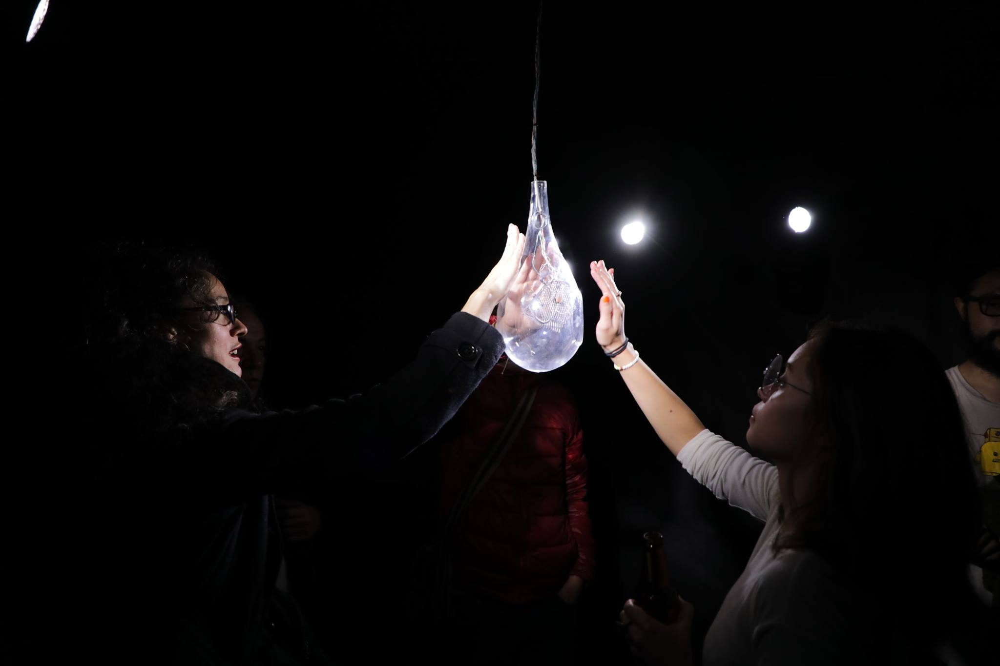
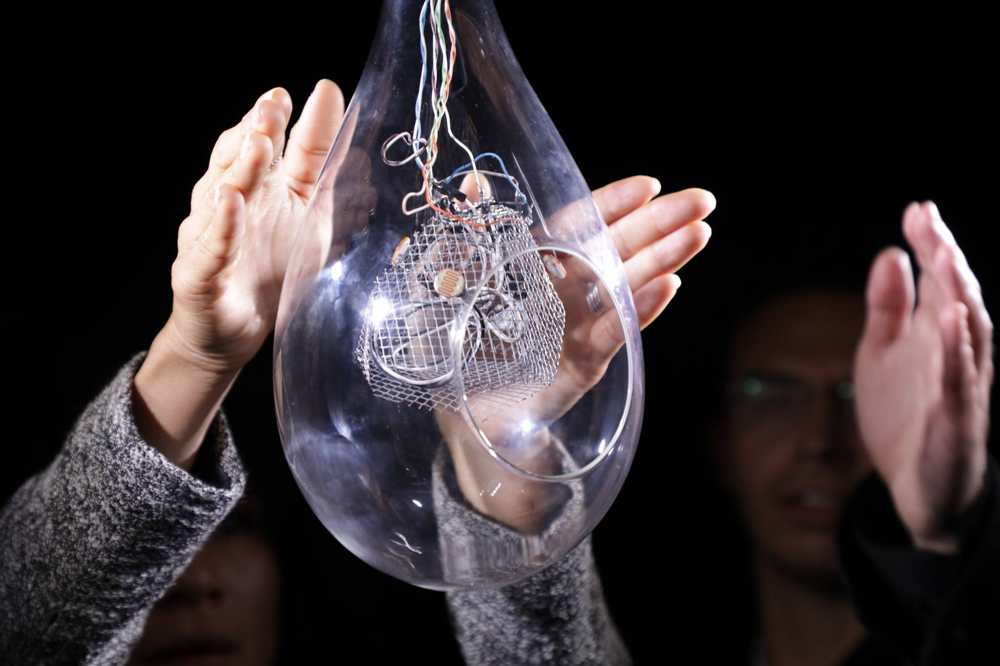

Quantum Sphere
Pieza diseñada en equipo con el astrofísico Santiago Vargas en el marco de la curaduría Quanta-2017, consistente en un diálogo interdisciplinar guiado por preguntas acerca del sonido, la física cuántica y nuestra relación cotidiana con la luz del sol. El resultado es una instalación interactiva que usa el fenómeno fotoeléctrico para crear un espacio donde el público que interactúa genera variaciones en un ambiente sonoro-lumínico.


Descripción
La instalación consistió en un objeto de vidrio en forma de gota que en su interior contenía un núcleo fabricado en malla galvanizada, receptáculo de foto-receptores sensibles al cambio de intensidad lumínica. Los sensores se conectaron a una tarjeta Arduino, donde un algoritmo mide la interacción y convierte las señales luminosas en señales sonoras.
La instalación se valió del efecto fotoeléctrico para crear un espacio interactivo en donde el público generó variaciones en el sistema. La obra reflexionó en torno a la forma como operamos en la cotidianidad, a través de las relaciones que creamos con los ambientes y los diversos objetos, sin percatarnos de la manera como afectamos o somos afectados por éstos.

